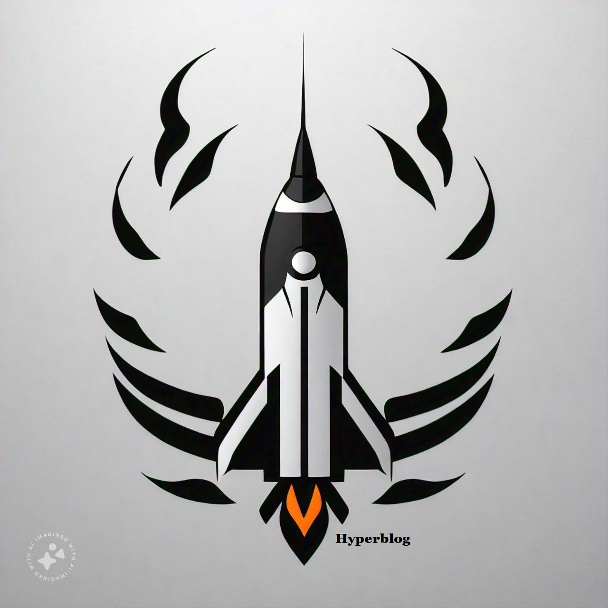

Hyperblog
Tu blog de cabecera
Aquí inicia la historia de un gran proyecto
Y este es el párrafo de inicio donde vamos a explicar las cosas increíbles que se pueden hacer con ramas

Los blog son la mejor forma de compartir información y tus ideas. Mucho más que ir a conferencias o salir en Youtube. Excepto si eres un rockstar, pero estadisticamente no lo eres... por ahora.
Suscribete y dale like